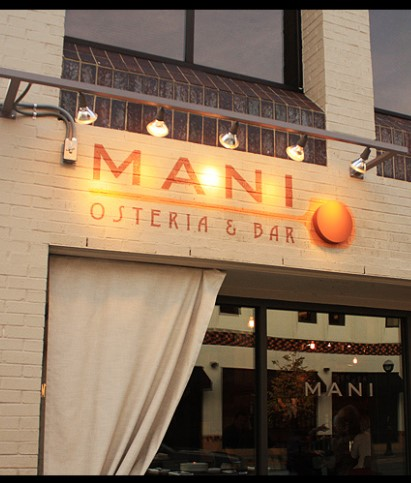
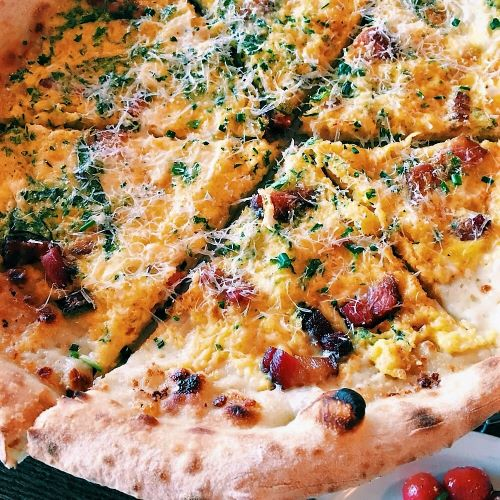
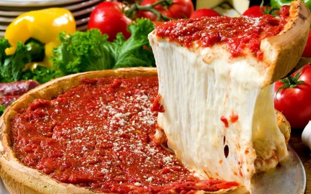
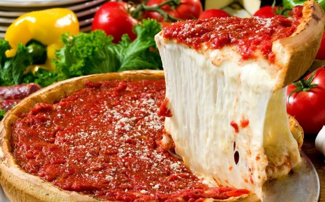
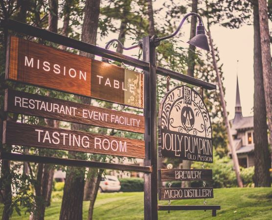
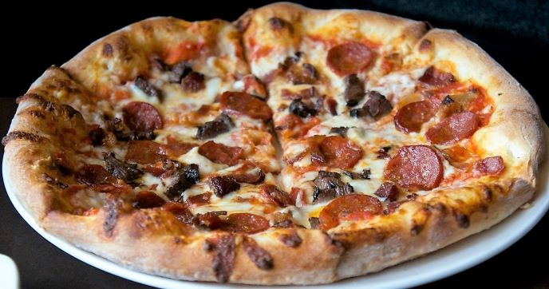
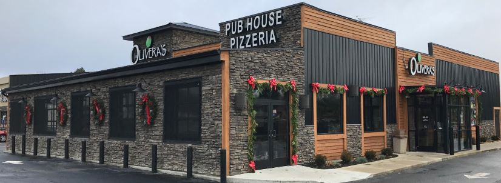
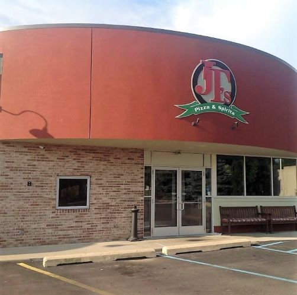
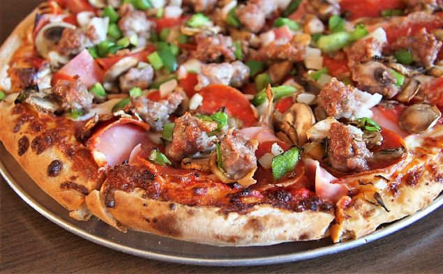

1. Mani Osteria & Bar - Ann Arbor, Michigan
 Mani Osteria won the honor of MLive's annoual 'Michigan’s Best Pizza' competition in 2013, and, in my opinion, not only is still the best in Michigan, but the best in the Midwest. Their wood fired ovens give customers the signatiure flaky crust of traditional Neapolitan style pizza. The toppings are absolutely delicious, with each pre-designed pizza full of ingredients that are both authentic yet innoviate.
2. Giordano's - Chicago, Illinois
 

In terms of authentic stuffed deep dish pizza, there truly isn't a place that does it better than Giordano's. Despie being packed full of fresh and delicious cheese, veggies, and meats, the dough and crust maintain a firm structure.
3. Jolly Pumpkin - Old Mission Peninsula (Traverse City), Michigan
 Many restaurants boast about how they make their pizza dough fresh daily, but Jolly Pumpkin is one of the few places where I can actually believe them because of how fresh the dough tastes. The dough also has a uniquely delicious flavor from being infused with lots of handcrafted beer and then cooked on a marble slab. The toppings are satisfactory, but truly inferior to the dough and crust.
4. Olivera's Restaurant - Portland, Michigan

One of my favorie part of my family's summer reunions at my aunt and uncle's house is the family trip to Olivera's. Since I am not a huge fan of pizza sauce, Olivera's pizza has a special place in my heart. The pepperonis have a nice spiciness and crunch to them. Unfortuanetly, the cheese is fairly bland and gooey.
5. JT's Pizza & Spirits - Grand Rapids, Michigan
 JT's is actually closer to Cascade and Ada than it is to downtown GR, and it fits right in with the more local feel, espeically since locals often witness their friends from school making the pizzas. The toppings are always fresh and tasty; however, the crust is usually a little tough to each, and the dough is usually a little on the soggy side.